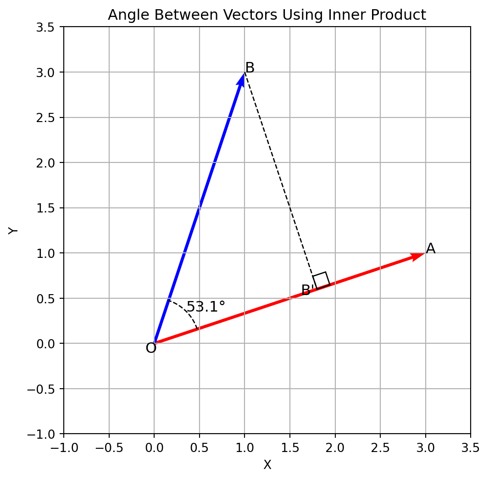

ベクトルの成す角と内積
\(\pmb{a}, \pmb{b} \in \mathbb R^2\) を空間内の２つのベクトルでいずれもゼロベクトルではないとします．原点 \(O\) を始点として
\[ \begin{gather} \pmb{a} = \overrightarrow{OA}\\ \pmb{b} = \overrightarrow{OB} \end{gather} \]
となる点 \(A, B\) をとります．このとき，
\[ \theta = \angle AOB \]
を ベクトル \(\pmb{a}, \pmb{b}\) の成す角 といいいます．ただし，\(0 \leq \theta \leq \pi\) とします．
Definition 1 : ベクトルの内積
\[ \|\pmb{a}\|\,\|\pmb{b}\| \cos \theta \]
を \(\pmb{a}\) と \(\pmb{b}\) の内積，またはスカラー積といい，\((\pmb{a}, \pmb{b})\) や \(\pmb{a} \cdot \pmb{b}\) で表す．\(\pmb{a}, \pmb{b}\) のいずれかがゼロベクトルの場合は
\[ (\pmb{a}, \pmb{b}) = 0 \]
とする．
▶ シュワルツの不等式
内積の定義
\[ (\pmb{a}, \pmb{b}) = \|\pmb{a}\|\,\|\pmb{b}\| \cos \theta \]
より， \(-1 \leq \cos\theta \leq 1\) であるから
\[ \vert(\pmb{a}, \pmb{b})\vert \leq \|\pmb{a}\|\,\|\pmb{b}\| \]
であることがわかります．証明は いろいろな三角不等式 > シュワルツの不等式と三角不等式 を参考にしてください．
▶ 直交(orthogonal)
ベクトル \(\pmb{a}, \pmb{b}\) の成す角が直角のとき，ベクトル \(\pmb{a}, \pmb{b}\) は直交すると呼びます．このとき，\(\cos\theta = 0\) であることから
\[ \pmb{a} \perp \pmb{b} \Longleftrightarrow (\pmb{a}, \pmb{b}) = 0 \]
▶ ベクトルの角度と幾何学的理解
ベクトルの成す角の定義より
\[ \theta = \arccos \frac{(\pmb a, \pmb b)}{\|\pmb a\|\,\|\pmb b\|} \]
この定義が幾何学的に見て妥当なものかどうかを以下確認します．
Figure 1 のように \(\pmb{a}, \pmb{b}\) を考えたとき，\(\pmb{b}\) の先端から \(\pmb{a}\) に対して垂線を下ろします．その足 \(B'\) のベクトルを \(k\pmb a\) とおくと，２つのベクトルが直交 \(\displaystyle\theta = \frac{\pi}{2}\)するとき，その内積は \(0\) になることから
\[ (\pmb {b} - k\pmb {a}, \pmb {a}) = 0 \]
内積演算の性質より
\[ \begin{align} &(\pmb {a}, \pmb {b}) = k \|\pmb {a}\|^2\\ &\Rightarrow k = \frac{(\pmb {a}, \pmb {b})}{\|\pmb {a}\|^2} \label{#eq-inner-angle} \end{align} \]
\(\triangle BOB'\) は直角三角形なので \(\angle BOB'\) に対応する \(\cos \theta\) は
\[ \cos \theta = \frac{k\|\pmb a\|}{\|\pmb b\|} \]
\(\eqref{#eq-inner-angle}\) をもちいると
\[ \begin{align} \cos \theta &= \frac{k\|\pmb a\|}{\|\pmb b\|}\\ &= \frac{(\pmb {a}, \pmb {b})}{\|\pmb {a}\|^2}\frac{\|\pmb a\|}{\|\pmb b\|}\\ &= \frac{(\pmb {a}, \pmb {b})}{\|\pmb a\|\,\|\pmb b\|} \end{align} \]
と整理することができ，これは Definition 1 と一致することがわかります．
Code
import numpy as np
import matplotlib.pyplot as plt
import matplotlib.patches as patches
import cmath
# Define two vectors
v0 = np.array([1, 0])
v1 = np.array([3, 1])
v2 = np.array([1, 3])
# Calculate the angle using the dot product
dot_product = np.dot(v1, v2)
norm_v1 = np.linalg.norm(v1)
norm_v2 = np.linalg.norm(v2)
cos_theta_0 = np.dot(v0, v1) / (norm_v1)
cos_theta = dot_product / (norm_v1 * norm_v2)
theta_rad_0 = np.arccos(cos_theta_0)
theta_rad = np.arccos(cos_theta)
theta_deg = np.degrees(theta_rad)
# define projection of B into A
v3 = v1 * norm_v2 * cos_theta / norm_v1
# Plot the vectors
fig, ax = plt.subplots(figsize=(6,6))
ax.grid(True)
origin = np.array([0, 0])
ax.quiver(*origin, *v1, color='r', scale=1, scale_units='xy', angles='xy')
ax.quiver(*origin, *v2, color='b', scale=1, scale_units='xy', angles='xy')
# Add angle arc using a circle segment
angle_range = np.linspace(np.arccos(cos_theta_0), theta_rad + np.arccos(cos_theta_0), 100)
arc_radius = 0.5
arc_x = arc_radius * np.cos(angle_range)
arc_y = arc_radius * np.sin(angle_range)
ax.plot(arc_x, arc_y, 'k--', linewidth=1)
ax.plot((v2[0], v3[0]), (v2[1], v3[1]), 'k--', linewidth=1)
# add square box at B'
theta = np.angle(complex(v3[0], v3[1])) # 60 degrees
orthogonal_theta = theta + np.pi / 2 # 90° 直交
offset = np.linalg.norm(v3)
size = 0.15
# 直角マークの位置を作成（60°方向に少し移動 → 90°方向に正方形を描く）
base_x = offset * np.cos(theta)
base_y = offset * np.sin(theta)
rect_dx = size * np.cos(orthogonal_theta)
rect_dy = size * np.sin(orthogonal_theta)
# 小さな直角マーク（平行四辺形を回転して表現）
right_angle = patches.Polygon(
[
(base_x, base_y),
(base_x + rect_dx, base_y + rect_dy),
(
base_x + rect_dx + size * np.cos(theta),
base_y + rect_dy + size * np.sin(theta),
),
(base_x + size * np.cos(theta), base_y + size * np.sin(theta)),
],
closed=True,
edgecolor="black",
facecolor="none",
)
ax.add_patch(right_angle)
# Annotate angle
ax.text(np.median(arc_x), np.median(arc_y), f"{theta_deg:.1f}°", fontsize=12)
ax.text(*origin-0.1, f"O", fontsize=12)
ax.text(*v1, f"A", fontsize=12)
ax.text(*v2, f"B", fontsize=12)
ax.text(*v3*0.9, f"B'", fontsize=12)
# Plot settings
ax.set_xlim(-1, 3.5)
ax.set_ylim(-1, 3.5)
ax.set_aspect('equal')
ax.set_title("Angle Between Vectors Using Inner Product")
ax.set_xlabel("X")
ax.set_ylabel("Y")
plt.show()Theorem 1
２つのベクトル \(\pmb a, \pmb b\) の成分表示を \(\pmb a = (a_1, \cdots, a_n), \pmb b = (b_1, \cdots, b_n)\) とするとき
\[ (\pmb a, \pmb b) = \sum_{i=1}^n a_ib_i \]
が成り立つ．ただし，証明にあたってノルムの定義は与えられているものとする
\[ \|\pmb a\| = \sqrt{a_1^2 + \cdots + a_n^2} \]
内積の性質
\(\mathbb R^n\) の属する\(n\)次元実ベクトル \(\pmb a = (a_1, \cdots, a_n)^T, \pmb b = (b_1, \cdots, b_n)^T\) を考えます．この２つのベクトルの内積は上で確認したように
\[ (\pmb a, \pmb b) = \sum_{i=1}^n a_ib_i \]
となります．ここで，\(\pmb a, \pmb b\) を \((n \times 1)\) 行列とみなすと
\[ (\pmb a, \pmb b) = \pmb a^T\pmb b \]
と一致します．ここから\(n\)次元実ベクトルの内積について次の演算性質を確認することができます．
Theorem 2
\(h, k \in \mathbb R\) とすると
\[ \begin{align} \text{対称性:} \quad& (\pmb a, \pmb b) = (\pmb b, \pmb a)\\ \text{線形性:} \quad& (h\pmb a + k\pmb a^\prime, \pmb b) = h(\pmb a, \pmb b) + k(\pmb a^\prime, \pmb b)\\ & (\pmb a, h\pmb b + k\pmb b^\prime) = h(\pmb a, \pmb b) + k(\pmb a, \pmb b^\prime)\\ \label{#eq-positivity}\text{正値性:} \quad& (\pmb a, \pmb a) \geq 0 \end{align} \]
ベクトルの長さ: ノルム
Definition 2 : ノルム
計量ベクトル空間 \(V\) の任意のベクトル \(\pmb a\) に対して，\(\sqrt{(\pmb a, \pmb a)}\) をベクトル \(\pmb a\) の長さ, またはL2ノルムといい，\(\|\pmb a\|\) と表す．
内積の正値性 \(\eqref{#eq-positivity}\) より \(\|\pmb a\| \geq 0\) が成り立ち，長さ の概念（長さが負にならない）と対応していることがわかります．
Theorem 3
計量ベクトル空間 \(V\) の内積と長さについて，\(\pmb a, \pmb b \in V, k\in \mathbb R\) としたとき以下が成り立つ
\[ \begin{align} &\|\pmb a\| \geq 0\\ &\|k\pmb a\| = |k\||\pmb a\|\\ &(\pmb a,\pmb b) = \frac{1}{2}\{\|\pmb a + \pmb b\|^2 - \|\pmb a\|^2 - \|\pmb b\|^2\} = \frac{1}{2}\{\|\pmb a\|^2 + \|\pmb b\|^2 - \|\pmb a - \pmb b\|^2 \}\\ &\|\pmb a + \pmb b\|^2 + \|\pmb a - \pmb b\|^2 = 2(\|\pmb a\|^2 + \|\pmb b\|^2) \end{align} \]
▶ ピタゴラスの定理
\(n\) 次元実ベクトル空間 \(V\) に対して，\(\pmb a, \pmb b \in V\) を考えます．\(\pmb a\perp \pmb b\) が成立する場合，
\[ \begin{align} \|\pmb a + \pmb b\|^2 &= (\pmb a + \pmb b, \pmb a + \pmb b)\\ &= \|\pmb a\|^2 + \|\pmb b\|^2 + 2(\pmb a, \pmb b)\\ &= \|\pmb a\|^2 + \|\pmb b\|^2 \end{align} \]
これは \(\pmb a\perp \pmb b \Leftrightarrow (\pmb a, \pmb b) = 0\) であることからわかります．
▶ 一般化されたピタゴラスの定理
\(\pmb a_1, \cdots, \pmb a_n \in V\) が互いに直交している場合，
\[ \|\pmb a_1 + \cdots + \pmb a_n \|^2 = \|\pmb a_1 \|^2 + \cdots + \|\pmb a_n \|^2 \]
エルミート内積
実数上のベクトル空間の内積に相当するものを複素数上のベクトル空間で考えます．\(\pmb a \in \mathbb C^2\) について実数上のベクトル空間の内積と同じように考えると
\[ \begin{align} \pmb a &= (1 + 2i, 0)\\ (\pmb a, \pmb a) &= 1 - 4 + 4i = -3 + 4i \end{align} \]
となり，正値性 \((\pmb a, \pmb a)\geq 0\) が崩れてしまい，長さが定義できなくなるという問題が発生してしまいます．そこで \(\mathbb C^n\) 上のベクトル空間についての内積は
\[ (\pmb a, \pmb b) = \pmb a^T\overline{\pmb b} = a_1\overline{b_1} + a_2\overline{b_2} + \cdots + a_n\overline{b_n} \]
によって定義します(\(\overline b_j\) は \(b_j\) の共役複素数)．このように定義した場合
Property: エルミート内積の性質
\(\pmb a, \pmb b, \pmb c\in V\), \(k\in C\) のとき，
\[ \begin{align} &(\pmb a, \pmb b) = \overline{(\pmb b, \pmb a)}\\ &(\pmb a + \pmb b, \pmb c) = (\pmb a, \pmb c) + (\pmb b, \pmb c)\\ &(\pmb a, \pmb b + \pmb c) = (\pmb a, \pmb b) + (\pmb a, \pmb c)\\ &(k\pmb a, \pmb b) = k(\pmb a, \pmb b)\\ &(\pmb a, k\pmb b) = \overline k(\pmb a, \pmb b)\\ &(\pmb a, \pmb a) \in \mathbb R \text{ であり } (\pmb a, \pmb a) \geq 0, (\pmb a, \pmb a) = 0 \Leftrightarrow \pmb a = \pmb 0 \end{align} \]
１つ目の性質はエルミート性や共役対称性と呼ばれますが，以下のように確認することができます
\[ \begin{align} \overline{(\pmb b, \pmb a)} &= \sum_i \overline{b_i \overline{a_i}}\\ &= \sum_i \overline{b_i} a_i\\ &= \sum_i a_i\overline{b_i} \\ &= (\pmb a, \pmb b) \end{align} \]
▶ \(\mathbb C^n\) における直交
\(\mathbb C^n\) の場合，内積 \((\pmb a, \pmb b)\) は一般に複素数であって実数とは限りません．そのため，ベクトルの成す角は \(\mathbb R^n\) のようには定義できません． しかし，\((\pmb a, \pmb b) = 0\) のとき，\(\pmb a\perp \pmb b\) ということにすれば，直交という概念だけは定義できます．
Theorem 4 : シュワルツの不等式
\(\mathbb C^n\) の任意のベクトル \(\pmb a, \pmb b\) に対し，次が成り立つ．
\[ \|(\pmb a, \pmb b)\| \leq \|\pmb a\|\|\pmb b\| \]
Example 1 : 関数空間
実数の区間 \([a, b]\) で定義され，\(K\) の値を取る連続関数全体の空間 \(U\) において，\(f, g\in U\) に対し，
\[ (f, g) = \int^b_a f(x) \overline{g(x)} dx \]
と定めると，これは内積となる．内積となることからSchwarzの不等式が適応できるので，次の不等式を得ることができます
\[ \begin{align} \|(f, g)\| &\leq \sqrt{(f, f)}\sqrt{(g, g)}\\[5pt] \Rightarrow \left\|\int^b_a f(x) \overline{g(x)} dx\right\| &\leq \sqrt{\int^b_a f(x) \overline{f(x)} dx}\sqrt{\int^b_a g(x) \overline{g(x)} dx}\\[5pt] &= \sqrt{\int^b_a \|f(x)\|^2 dx}\sqrt{\int^b_a \|g(x)\|^2 dx}\\ \end{align} \]